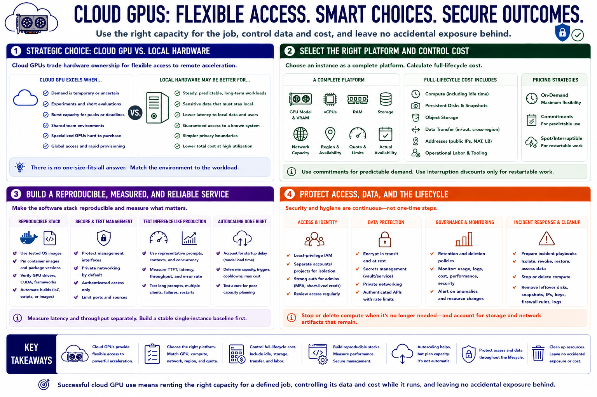

Course Summary and Key Takeaways
Connecting to LMS... Progress: in progress

Narration
Cloud GPUs exchange hardware ownership for flexible access to remote acceleration. They are especially useful for temporary demand, experiments, burst capacity, shared team environments, and hardware configurations that would be difficult to purchase. Local hardware may remain simpler or less expensive for steady workloads, sensitive local data, and users who need guaranteed access to a known system.
Select an instance as a complete platform. The GPU model and VRAM must fit the workload, while virtual CPUs, RAM, storage, network capacity, region, quota, and actual availability affect whether the system works in practice. Calculate full-lifecycle cost, including idle time, disks, snapshots, object storage, data transfer, addresses, and operational labor. Use commitments only for predictable demand and interruption discounts only for restartable work.
Make the software stack reproducible. Pin images and packages, verify acceleration, protect management interfaces, and test inference with representative prompts, contexts, and concurrency. Measure latency and throughput separately. Treat autoscaling as an operational system with startup delay and spending limits, not as an automatic cure for poor capacity planning.
Finally, protect access and data throughout the lifecycle. Apply least-privilege IAM, private networking, authenticated APIs, secrets management, encryption, retention rules, monitoring, and incident procedures. Stop or delete compute when it is no longer needed, then account for storage and network artifacts that remain. Successful cloud GPU use means renting the right capacity for a defined job, controlling its data and cost while it runs, and leaving no accidental exposure behind.